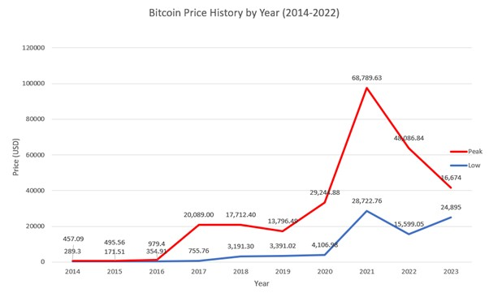

This paper showcases the pros and cons of blockchain system. Cryptocurrencies use the blockchain
system, With the unfathomable rise of bitcoin in the last decade, blockchain technology and crypto
currencies have gained popularity. However, with this new fame, notoriety has also been built.
Crypto currencies have been commonly associated as unreliable and unscrupulous. With the
advancements of technology, data has become vastly more important. The security and authenticity
of our data has become increasingly necessary. Moreover, the speed at which data is transferred.
This paper attempts to explore the challenges blockchain technology faces from being more
commonplace, and reasons why blockchain technology should be used in the first place.
Introduction
Does Blockchain technology and Cryptocurrencies have a place in the future?
With the sudden increase of popularity in crypto technologies, many adversities have arose.
The mass press on cryptocurrency being a volatile and chaotic digital currency with no tangible value
and the gross fraudulent schemes, has given crypto currency and blockchain a notorious public
image. An example of this is Logan Paul’s ‘CryptoZoo scam’, where he “pledged to refund investors
$1.8 million”, and hasn’t paid back anyone after “ 9 months “ of announcing his pledge. (The
Economic Times, Oct 09, 2023). Similarly, Founder of FTX and Alameda Research, Sam Bankman-
Fried was found guilty of fraud after taking customer’s assets and using them for “risky trades” (D.
Brian Blank, Brandy Hadley, Nov. 7 2023). This and similar incidents in the crypto-world have
severely impacted the public’s perception of cryptocurrencies, instilling a distrust in them. However,
blockchain goes beyond cryptocurrency (a means for storing capital). This paper will explain how
cryptocurrencies and blockchain work and why they could play significant role in the future.
Multistep transactions requiring verification and traceability can be made easier with the use of
blockchain technology. It can expedite data transfer procedures, guarantee safe transactions, and
reduce compliance costs. Blockchain technology can help with product auditing and contract
management. Effectively lowering costs and increasing profit margins.
.”
Analysis and discussion
“A blockchain is a distributed database or ledger shared among a computer network's nodes“
(Adamy Hayes, April 23 2023). Imagine blockchain technology as an open database, where every
transaction ever done is recorded. Since, transactions may be done without a central authority and
also can be instead be validated by a network of computer nodes that run blockchain software,
making blockchain technology very appealing. This is crucial for digital currencies, enabling secure
decentralized transactions.( Blockchain Revolution: Beyond Bitcoin and into the Future, Sep 07, 2023)
However, blockchain doesn’t only have to be a means to store wealth, but store information (such as
medical records, government records, legal contracts, etc.). This can mean a reduction in costs and
quicker data flows, removing middlemen. Blockchain could help to tackle banking, cyber security,
management, healthcare and government issues (Sana Afreen, Jul. 21 2023). For instance, blockchain
technology could help to provide instantaneous and borderless transactions. Because blockchain
relies on peer-to-peer connections that prevent data manipulation, it can detect malicious attacks
fast. The block chain ledger is verified by comparing it to every user’s version of the blockchain.
Hackers can attack government and organisation’s databases, such as the Equifax 2017 data breach
affecting “147 million people” (Federal Trade Commission, December 2022). Using cryptographic
techniques (asymmetric-key algorithms, and hash functions), every single piece of data saved on the
blockchain network is encrypted, preventing hackers. Blockchain offers a transparent and
trustworthy method of recording transactions by not following a single system (not giving your
private information to anyone). This could greatly benefit people who do not have bank accounts, as
“1.3 billion adults” “currently save, remit or pay bills in cash” (The World Bank, 2020) – enabling
equal opportunities for all regardless of background, gender, ethnicity or country. Bitcoin peaked at
2021 with “$68,789.63” (Brian Nibley, 1 Mar 2023) and it slowing decreasing in value onwards, with
peaks in 2022 – “$48,086.84” and 2023 “$16,674”. [figure 1]
This evidently illustrates a negative trend for bitcoin (one of the biggest cryptocurrencies), and
cryptocurrencies as a whole.
What is holding blockchain technology back? The problems are: lack of adoption by
organizations, the need of highly skilled workers, financing projects, regulations,
interoperability. Blockchain technology requires a high energy demand, devices on the
Bitcoin network consumes more energy annually compared to Pakistan (Investopedia,
Cambridge University). The struggle of whether energy is available and cost effective is
largely considered in the technology field. Blockchain is very new technology still in the
developmental stages. Projects require a great amount of skill and financing due to the
complexity of blockchain technology. Additionally, interoperability (the potential for data
sharing, viewing and access) will be another challenge for Blockchain, as blockchain systems
are created with their own systems and rules, it is harder to adopt. Education is the biggest
challenge blockchain technology faces currently. Due to the shear complexity and recency of
blockchain technology (with bitcoin only being officially released in 2009).
Conclusion:
Bitcoin saw an unheard-of surge in 2017; at one time, one BTC was worth more than $19,000. However,
there was a significant collapse in the price of Bitcoin in January 2018, with a mere 65%
drop in value in that month alone. Many individuals appeared to lose faith in blockchain
technology following this upswing and downswing, solely connecting it to one particular
kind of cryptocurrency (Bitcoin). Nonetheless, it is clear that blockchain technology
has a wide variety of applications across several industries. The blockchain has a lot of
intriguing applications, and these will only get more numerous as time goes on.
Reference List
1. The Economic Times, Title: Logan Paul faces backlash as CryptoZoo victims allegedly offered 10% compensation. (Oct 09, 2023)
https://economictimes.indiatimes.com/news/international/us/logan-paul-faces-backlash-as-cryptozoo-victims-allegedly-offered-10-compensation/articleshow/104291774.cms?from=mdr
2. The Conversation, D. Brian Blank, Brandy Hadley,Title: Sam Bankman-Fried was convicted of fraud following the collapse of the cryptocurrency exchange FTX. Here’s what investors need to know. (November 7, 2023)
https://theconversation.com/sam-bankman-fried-was-convicted-of-fraud-following-the-collapse-of-the-cryptocurrency-exchange-ftx-heres-what-investors-need-to-know-217026
3. Investopedia, Adam Hayes, Title: Blockchain facts: What it is, How it works, and How it can be used.
(April 23, 2023)
https://www.investopedia.com/terms/b/blockchain.asp#
4. Simplilearn, Sana Afreen, Title: Why is Blockchain Important and Why Does it Matters.
(July 21, 2023)
https://www.simplilearn.com/tutorials/blockchain-tutorial/why-is-blockchain-important#:~:text=Bitcoin%20cryptocurrency%20uses%20blockchain%20technology,speed%20up%20data%20transfer%20processing.
5. World Bank, “Universal Financial access 2020”
https://ufa.worldbank.org/en/country-progress
6. Federal Trade Commission, Equifax data breach settlement
(December 2022)
https://www.ftc.gov/enforcement/refunds/equifax-data-breach-settlement
7. University of Cambridge, ”Cambridge Bitcoin Electricity Consumption Index”
https://ccaf.io/cbnsi/cbeci
(December 2022)
8. The Gartner Report, “Blockchain Technology: What’s Ahead?”
https://www.gartner.com/en/information-technology/insights/blockchain
(December 2022)
9. Brian Nibley, Bitcoin Price History
( March 01, 2023)
https://www.sofi.com/learn/content/bitcoin-price-history/
10. Blockchain Revolution: Beyond Bitcoin and into the Future
https://papersowl.com/examples/blockchain-revolution-beyond-bitcoin-and-into-the-future/
(Sept 07 2023)
11. Figure 1 Bitcoin Price History Trend (2014-2022),
source: https://www.sofi.com/learn/content/bitcoin-price-history/, https://finance.yahoo.com/quote/BTC-USD/history?period1=1410825600&period2=1670889600&interval=1mo&filter=history&frequency=1mo&includeAdjustedClose=true
(March 01, 2023)
